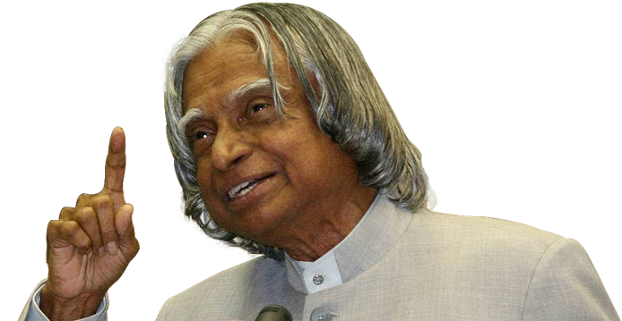

“Dream is not that which you see while sleeping it is something that does not let you sleep.”
A. P. J. Abdul Kalam
15 October 1931 - 27 July 2015

Biography
Avul Pakir Jainulabdeen Abdul Kalam, better known as APJ Abdul Kalam, was an illustrious scientist turned statesman who served as the 11th President of India from 2002 to 2007. Kalam spent more than forty years as a science administrator and scientist mainly at the Indian Space Research Organization (ISRO) and Defence Research and the Development Organization (DRDO). He was closely associated with the military missile development efforts and civilian space programme of India. For his work on launch vehicle technology and development of ballistic missile, he was given the pseudonym of ‘The Missile Man of India.’ In 1998, he played a prominent role in Pokhran-II Nuclear Tests.